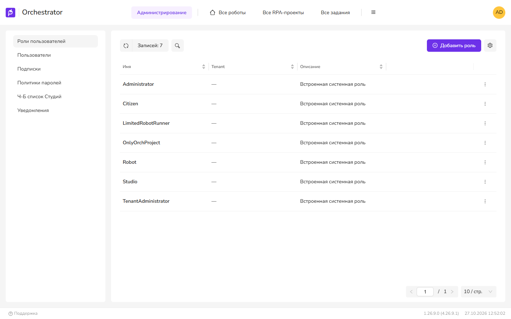

Администрирование
На странице описано, где в интерфейсе добавляются пользователи и роли, загружаются лицензии, настраиваются производственные календари, политики паролей и подписки на события.
Где это в меню
| Что | Путь в UI4 | Кому видно |
|---|---|---|
| Роли пользователей, Пользователи, Подписки, Уведомления | Настройки → Администрирование | по правам Roles.View, Users.View, Subscriptions.View, NotificationEmailQueue.View |
| Политики паролей | Настройки → Администрирование → Политики паролей | только администратору |
| Ч-Б список Студий | Настройки → Администрирование | по праву на просмотр лицензий |
| Лицензии | Настройки → Лицензии | Licenses.View |
| Производственный календарь | Настройки → Система (один календарь) или Задания (несколько календарей) | ProductionCalendars.View |

Пользователи
- Откройте Настройки → Администрирование → Пользователи и нажмите Добавить пользователя.
- Заполните Логин (допустимы символы
a-zA-Z0-9-._@+), Имя, Email, Пароль и выберите Роли. При необходимости задайте Квота на лицензии робота и включите Требовать смену пароля при следующем входе в систему. - Нажмите Сохранить. Сообщение «Пользователь успешно создан», пользователь есть в списке
Тип пользователя: локальный, AD или OpenID (Keycloak).
После 5 неудачных попыток входа пользователь блокируется на 300 секунд. Значения задаются параметрами WebApi Security:Lockout:MaxFailedAccessAttempts (по умолчанию 5) и Security:Lockout:DefaultLockoutTimeSpan (по умолчанию 300 с).
Роли
Роль создаётся в Настройки → Администрирование → Роли пользователей → Добавить роль. В форме задаются Имя (обязательное), Описание, Роль студии и матрица прав.
Строки матрицы сгруппированы: Роботы, Rpa-проекты, Задания, Журналы, Настройка. Колонки — Просмотр, Создание, Редактирование, Удаление, Управление. Одна ячейка может включать несколько прав API: например, просмотр роботов включает также просмотр журнала робота и дистрибутивов.
Доменные пользователи и пользователи Keycloak получают роли через привязку: к роли привязываются Группы AD или роли Keycloak. Подробнее — Вход и доступ.
Встроенные системные роли: Administrator, TenantAdministrator, Robot, Studio, Agent, RobotLogsService, RdpService, Integration, orchestrator, AnalyticService, Citizen, OnlyOrchProject, LimitedRobotRunner. В списке Роли пользователей из них отображаются семь: Administrator, TenantAdministrator, Robot, Studio, Citizen, OnlyOrchProject, LimitedRobotRunner.
Доступ к объектам в общих папках задаётся отдельно от роли. Уровни: только чтение, использование, редактирование, удаление; каждый следующий включает предыдущий.
Лицензии
- Откройте Настройки → Лицензии и нажмите Действия → Запрос на лицензию. Заполните Продукт, Период, Количество, Дата регистрации и нажмите Сохранить. Браузер скачал файл запроса
- Отправьте файл запроса вендору. Значения полей и адрес отправки — Первый запуск.
- Полученный файл лицензии загрузите через Действия → Добавить лицензию. Лицензия в списке, Состояние — «VALID», видна Дата истечения или «Бессрочная»
При замене лицензии вендор отзывает прежнюю: загрузите файл отзыва через Действия → Добавить отзыв лицензии, затем сформируйте Запрос на замену лицензии.
Производственные календари
Режим задаётся параметром ProductionCalendar:Multiple в конфигурации WebApi.
- Один календарь — Настройки → Система → Производственный календарь, только в тенанте по умолчанию.
- Несколько календарей — Задания → Производственный календарь: у каждого есть имя (5–200 символов, уникальное), описание (5–500) и приоритет на случай пересечения дат.
Типы дней: «Рабочий день», «Не рабочий день», «Предпраздничный день».
Политики паролей
Политика настраивается в Настройки → Администрирование → Политики паролей. Поля: минимальная длина (не меньше 3), минимум уникальных символов (не меньше 1), число прежних паролей, которые нельзя повторять (не меньше 1), требования к цифрам, строчным, заглавным буквам и спецсимволам.
Значения до первого изменения берутся из секции Security:Password конфигурации WebApi: все требования включены, длина 6, уникальных символов 1, прежних паролей 4. После изменения политики все пользователи должны войти заново.
Подписки на события
- Откройте Настройки → Администрирование → Подписки и нажмите Добавить подписку.
- Заполните обязательные поля Наименование и Email, включите Подписка активна.
- Выберите события в полях Системные события и Оркестраторные события. Системные события: недоступность агента, рост очереди проектов, истечение срока лицензии. Одно и то же событие нельзя добавить в подписку дважды.
- Чтобы получать события только по отдельным объектам, добавьте Фильтр по сущностям (Робот, Проект, Задание, Машина) кнопкой Добавить фильтр.
- Нажмите Сохранить. Подписка есть в списке
Письма отправляются через службу Notifications. Очередь писем — Настройки → Администрирование → Уведомления, там же действие Очистить очередь. Настройка отправки почты — Почта и оповещения.